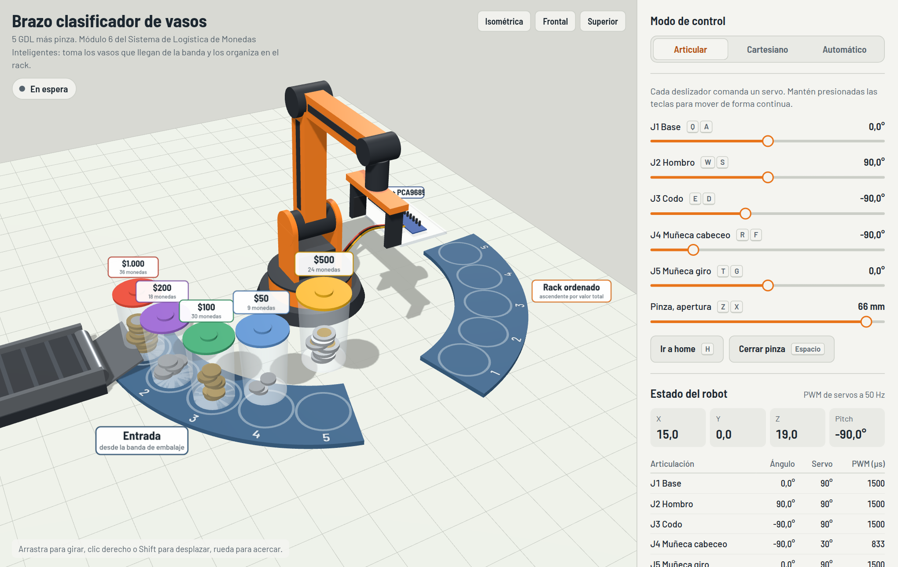

Brazo clasificador de vasos de monedas
Módulo 6 del Sistema de Logística de Monedas Inteligentes. Brazo de 5 GDL más pinza que recoge los vasos que llegan del contador y los deja ordenados en el rack por denominación, cantidad, valor o peso.
Simulación 3D
Modelo interactivo con modo articular, cartesiano y automático. Muestra la trama de servos que recibiría el ESP32.
Memoria de cálculo
Cinemática directa e inversa, espacio de trabajo, trayectorias, pares y electrónica, con calculadoras en vivo.
